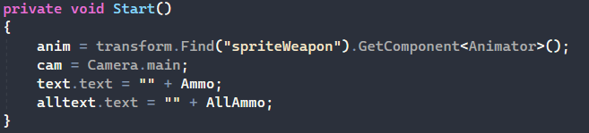

Содержание
Передвижение
Краткое пояснение:
мы берём у персонажа комонент Rigitbody2d, потом записываем данные о нажатие кнопок передвижения в переменную direction, далее мы с помощью взятого ранее rb и функции MovePosition передвигаем персонажа по полученному направлению с скоростью заданной заранее
Стрельба
Поворот за мышкой
Поворот за мышкой спрайта
Запись в переменную компонента аниматор для дальнейших анимаций, отображение колличества патронов на старте
Реализация стрельбы, её анимаций, паузы между выстрелами, перезарядки, звук выстрела
Стрельба и разброс при ходьбе,высчет патронов после выстрела
Перезарядка и запись количество патронов на интерфейсе
Получение врагами урона

Мили атаки
Код:
Нанесение урона врагам и обьектом путём отслеживания их в определённом радиусе от точки атаки, паузы между атаками, звук атаки, визуальный эфект при попадании
Спавн на некоторое время эфекта атаки
Рывок
Рывок по нажатию кнопки в сторону в которую шёл персонаж, паузы между рывками, смена переменной для отслеживания времени неуязвимости и нанесения урона рывком
Нанесение врагу урона при касании с персонажем во время рывка
Враги и получение урона
Код получения урона у гг
Получение урона гг при соприкосновении с пулей врага, врагом если не активен рывок и ловушкой
Таймер времени неуязвимости после получения урона
Активация спрайтов сердечек для визуального отображение их количества, если последнее сердечко выключенно то запускается следующая функция
загрузка сцены смерти и запись в переменную на какой сцене умер игрок для дальнейшей загрузки этой сцены
Общие характеристики и код врагов
Передвижение, анимация передвижения, проверка есть ли рядом игрок чтобы на него заагрится, если враг находится в папке с тегом ActiveEnemy
Проверка количества здоровья, уничтожение если здоровье меньше или равно 0, рандомный дроп бафов для игрока после смерти
Нахождение игрока и запись его позиции в переменную
получение урона
получение урона при колизии с пулей игрока или игрока в момент рывка с аудио эфектом
показание радиуса агра(видно только в конструкторе)
Мили враг
Запись в переменные аниматор врага, добавление данных о гг в переменную
Проверка количества здоровья, при активном агре движение в сторону игрока и при его соприкосновении возврат от игрока на некоторое время
Добавление в функцию из класса родителя измену локальной переменной для отслеживания соприкосновения для отхода от гг
Дальник враг
Запись в переменные аниматор врага, добавление данных о гг в переменную, приравнивание таймера к стартовому таймеру
Проверка количества здоровья, анимация стояния на месте при остановки движения, движение в сторону гг, если враг не слишком близко, если близко он отходит, если растояние равно дистанции отсановки то он стоит, стрельба по таймеру
Стрельба, Аудио сопровождение, создание пули и добавление к ней силы чтобы она полетела в сторону гг
Призыватель враг
Запись в переменные аниматор врага, добавление данных о гг в переменную, приравнивание таймера к стартовому таймеру
Проверка количества здоровья, анимация стояния на месте при остановки движения, отход от гг если он ближе чем доспустимое растояние, если гг дальше этого расстояние то остановка на месте, спавн по таймеру одного врага из списка врагов
Звуковое сопровождение
Автор музыки сказал что это максимально черновой вариант и вообще он ничего не сводил, так что не бейте его
Cистема уровней и сохранение прогресса
Код меню:
Начало игры заново, продолжение с уровня на котором остановился и обнуление переменных, открытие меню настроек
закрытие меню настроек, проверка обнулён ли прогресс, если да то кнопки продолжить нет, если нет то она есть, а кнопки новой игры нет, закрытие меню уровней
Открытие меню уровней, проверка на каком уровне остановилося игрок которая влечёт за собой включение кнопок загрузки пройденных уровней, запуск уровня из меню уровней при этом не обнуляя прогресс игрока, обнуление переменных
Сброс прогресса
Открытие, закрытие дверей
Код главного героя:
Открытие двери, если сейчас не идёт бой с помощью куратины которая открывает дверь с задержой, анимация открытия, аудио эфект открытия
при соприкосновении с тригером с тегом Triger1 проверка одноразовой переменной, аудиоэфект закрытия двери, анимация закрытия, анимация блокировки всех дверей
Куратина на открытия двери
Анимация разблокирования двери, анимация разблокирования других дверей
Код тригеров:
Проверка есть ли враги в определённой зоне
Добавление в переменную всех врагов в определённой зоне, проверка одноразовой переменной(чтобы код на запускался 67891697672 раз), Добавление в переменную всех врагов в определённой зоне по таймеру, активация агра у врагов в определённой зоне
Визуальное отображение определённой зоны(работает только в конструкторе), при соприкосновении с гг запуск анимации закрытия дверей, активация агра у врагов в определённой зоне, закрытие дверей при нахождении врагов, перенос некоторых значений в переменные для отслеживания начала боя

Дроп с врагов и обьектов
Рандомная вероятность дропа при смерти врага, из списка бафов из которого выбор происходит тоже рандомно
Рандомная вероятность дропа при разрушени обьекта, из списка бафов из которого выбор происходит тоже рандомно
При соприкосновении с бафами происходит их уничтожение и запись в переменные гг, если здоровье или патроны не на максимуме
Cистема диалогов
При старте диалога происходит запись стартового индекса, запуск куратины, очистка поля текста
куратина которая посимвольно воспроизводит текст, аудиоэфект разговора
Пропуск посимвольного прописывания текста
Показ следующего текста в определённом промежутке и окончание диалога если закончились фразы
Код собеседника:
Показ радиуса передачи от собеседника промежутка фраз для последующего их воспроизведения, смена индексов начала и конца диалога, передача изменённых индексов в нестатичские переменные, при нахождении игрока в определённом радиусе передача ему фразы, индексы начала и конца диалога
Отслеживание в определённом радиусе от гг собеседника, ПК, записки и дальнейшее с ними взаимодействие при нажатие определённой кнопки
Система рандомного пароля
Код ПК:
Обнуление перемиенной правильности пароля и самого пароля, функция создания рандомного пароля, запись этого пароля в записке, проверка по таймеру правильно ли ввели пароль, сама функция рандомного пароля
Код гг:
Проверка правильности пароля и вывод True в окне ПК если правильно, передача данных для проверки пароля и закрытие меню ПК, Закрытие записки
Переход между уровнями при достижении цели уровня
Запуск проверок при значениях true в определённых переменных по таймеру
функция включения портала на следующий уровень, визуальное отобразение радиуса проверки нахожждения гг, сама проверка нахождение в определённом месте гг, проверка есть ли враги на сцене, проверка правильно введённого пароля
Тонна страшного кода который запускает функцию спавна портала при прохождении тех проверок у которых в переменных запуска проверок true